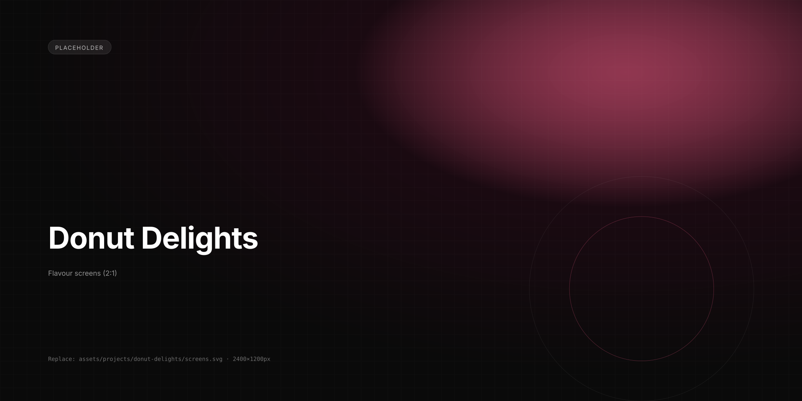
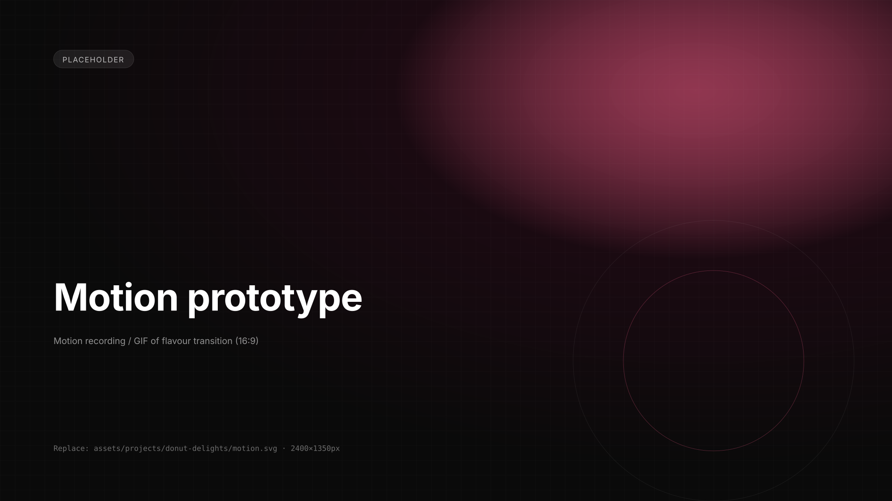

Project overview
Add the year and confirm whether the concept was presented to the client.
A visual-first website where motion and colour carry the brand: each flavour has its own colour world and transition.
Process
01Wireframes
Structure and flavour-switching pattern.
02UI design
Colour, type and product imagery per flavour.
03Motion
Smooth transitions between flavours, prototyped in Figma.
Design & motion

